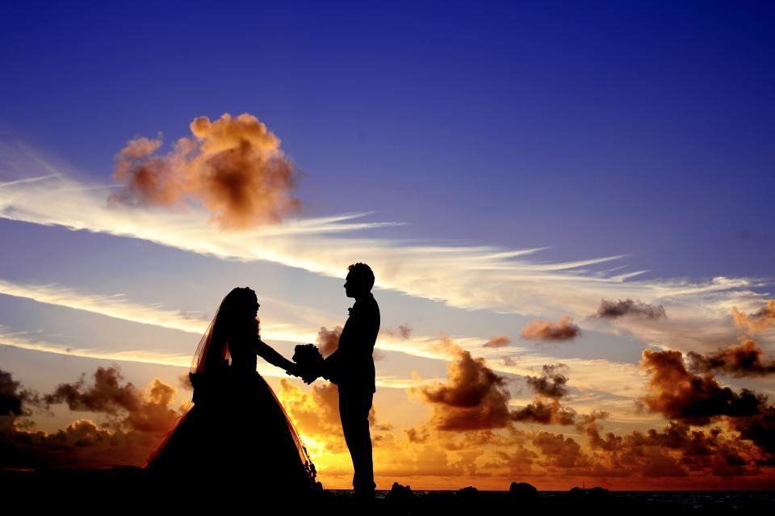
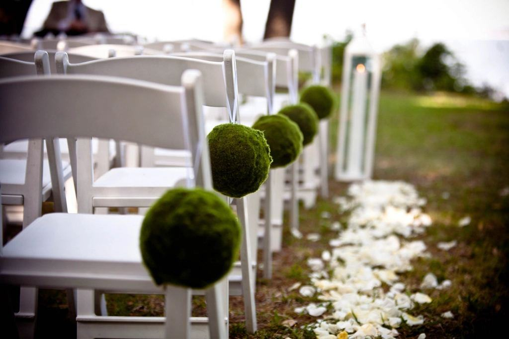
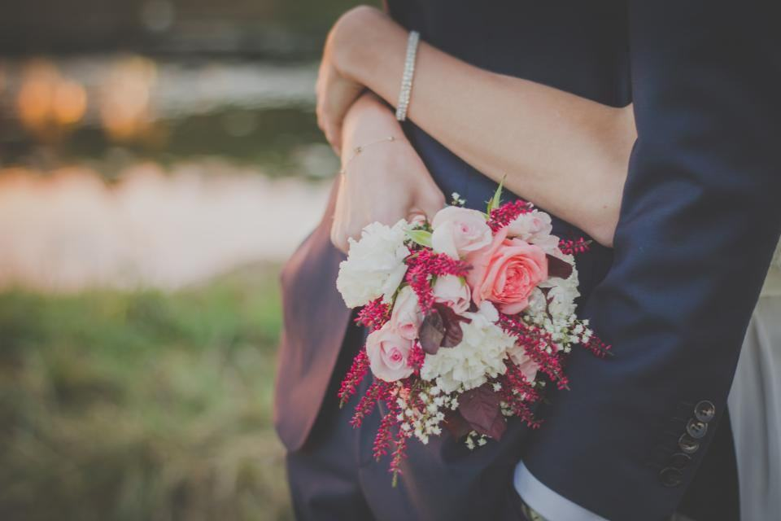

Fotografering
Bildspråket är ljust och mjukt: överexponerat motljus, pastelltoner och mycket luft runt människorna. Vi arbetar helst utomhus på eftermiddag och kväll, när ljuset över Siljan är som varmast – i juni räcker ljuset till porträtt långt efter att middagen är serverad.
Kyrka, fäbod eller loge?

Kyrka och tradition
Leksands, Rättviks och Mora kyrka har vi fotograferat i över hundra gånger. Vi vet var vi får stå, och var ljuset från fönstren faller på altaret i juli.
Med kyrkbåt från Hjortnäs eller Västanvik blir det en entré ingen gäst glömmer.

Fäbod och vall
Fäbodar runt Siljan hyrs ut för bröllop med vigsel på vallen och middag i ladugården. Vi hjälper er hitta en som passar antalet gäster.
Vi vet vilka som har el, vilka som har vatten och toaletter och vilka som har en väg bilarna klarar.

Porträtt i kvällsljus
Porträtten lägger vi helst mellan 20 och 22 i juni och juli, när solen står lågt över Siljan. Långbryggan i Rättvik och ängarna i Tällberg är favoriter.
Vi kör er dit och tillbaka och är borta från festen högst 30 minuter.

Dräkt och detaljer
Många brudpar i Dalarna bär sockendräkt eller ärvd brudkrona. Vi fotograferar broderier, silver och kransar som de arvegods de är.
Vi samarbetar med Leksands hemslöjd när en dräkt behöver lagas före dagen.
Så blir det er dag
- 1

Hör av er
Skicka datum och plats. Vi svarar inom ett dygn och skickar gärna ett galleri från samma kyrka eller fäbod.
- 2

Promenad i Leksand
Vi ses vid kyrkan eller på video och pratar igenom dagen – och tar gärna en provbild på kyrkbacken.
- 3

Bröllopsdagen
Vi följer ljuset hela dagen och lägger porträtten när solen står lägst.
- 4

Galleri och album
Ett galleri inom fyra veckor och albumet från Falun några veckor senare.